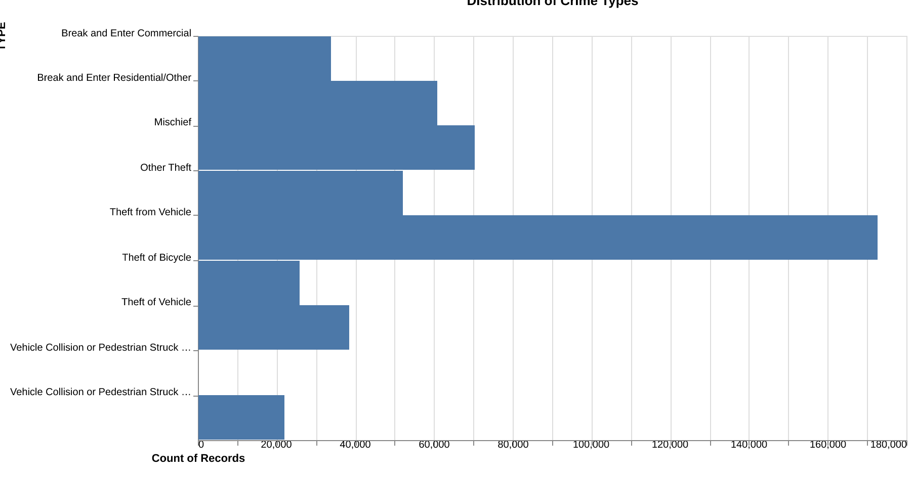
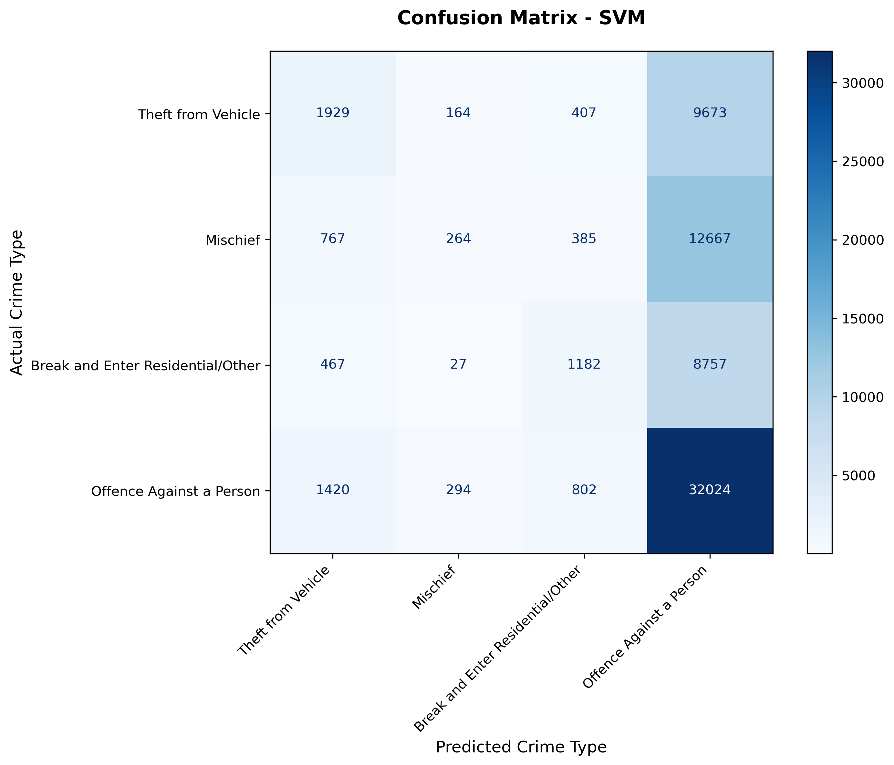

Predicting type of crime from location and time information
Summary
In this project, we aim to predict what type of crime occurred in Vancouver based on when and where it happened. We use a dataset from the Vancouver Police Department with over 530,000 crime records from 2003-2017, covering 11 different crime types including theft, break-ins, and vehicle collisions.
We tested three machine learning models: K-Nearest Neighbors, Support Vector Machines, and Logistic Regression. After tuning, all three models performed similarly, achieving an accuracy around 0.5. While this isn’t perfect, it shows that time and location do provide some useful information for predicting crime types, though there is clearly room for improvement, possibly with additional features.
Introduction
Background
Crime prediction is an important tool for police departments trying to figure out where to focus their resources. Vancouver, like most big cities, has many different types of crime happening at different times and places. If we can predict what kind of crime is likely to happen based on patterns in the data, it could help with planning patrols and prevention efforts.
Research Question
Can we predict the type of crime based on when and where it happens?
We’re comparing three different classification algorithms (K-NN, SVM, and Logistic Regression) to see if this is possible, and which model works best for this problem.
Methods
Data
We’re using the Vancouver Crime Dataset from Kaggle, which originally came from the Vancouver Police Department (Osaku 2017). It has 530,652 crime records from 2003 to 2017, split into 11 crime types. The most common is “Theft from Vehicle” (over 172,000 cases) and the rarest is “Homicide” (220 cases). We selected the four most common types of crime, to ensure that all of our target classes have a sufficient number of observations. The counts of these crimes in our training data are shown in Figure 1.
Each record includes:
- Time info: year, month, day, hour, minute
- Location info: neighborhood, street block, coordinates
There’s some missing data - about 10% of records don’t have time information and 11% are missing neighborhood data. We filled in missing times with the most common values and labeled missing neighborhoods as “Unknown.”
Analysis
We selected three models to use to build a classification model to predict the crime type for each incident in the Vancouver crime dataset: a k-Nearest Neighbors (k-NN) algorithm, a linear Support Vector Machine (SVM) classifier, and a multinomial Logistic Regression model (LogReg). For all tested models, all spatial, temporal, numeric, and categorical features were included. The categorical variables were one-hot encoded, and numeric variables were standardized using a column transformer immediately before model fitting. The crime dataset was split using an 80/20 stratified train test split, in order to preserve class proportions in both sets. A baseline model was created for each model type, using the default hyperparameter values. Then, hyperparameter optimization was performed on all models, using a 15,000-observation stratified subset of the training data, in order to decrease computational load. The best fit models found from these optimizations were then scored on the test data set. The analysis was conducted in Python using python (Van Rossum and Drake 2009), numpy (Harris et al. 2020), pandas (team 2024), matplotlib (Hunter 2007), tqdm (Costa-Luis 2019), click (Team 2020), and scikit-learn (Pedregosa et al. 2011). The code used to perform this analysis is available at: https://github.com/nicolelink33/Vancouver_Crime_Predictor.
Results & Discussion
Model Performance
KNN
The baseline k-NN model, using k = 5, achieved an accuracy of 0.44. After hyperparameter optimization, the optimal value was found to be k = 85, yielding a final accuracy of 0.51 on the test set. The hyperparameter optimization results are shown in Figure 2.

This model performed best on “Theft from Vehicle”, while categories such as “Mischief” and “Break and Enter” were more challenging. k-NN model performance by crime type is shown in the produced confusion matrix, shown in Figure 3.

SVM
The baseline LinearSVC model with C = 1 achieved an accuracy of 0.5. A best fit model was then found through hyperparameter optimization of C, which gave a final accuracy of 0.5 and an F1 score of 0.39, only slightly higher than the baseline, indicating that model performance was not highly sensitive to the value of C. The confusion matrix for the best fit linear SVM model is shown in Figure 4.

Logistic Regression
The baseline logistic regression model ahieved a test accuracy of 0.48. The best fit logistic regression model achieved a test accuracy of 0.48 and an F1 score of 0.32, indicating slightly lower performance than KNN and SVM., indicating slightly lower performance than KNN and SVM. The confusion matrix for the best fit logistic regression model is shown in ?@fig-LR-cm .

Comparison
All three of our models gave quite similar accuracies:
- Baseline K-NN: 0.44
- Optimized K-NN: 0.51
- Optimized SVM: 0.5
- Logistic Regression: 0.48
All three models also produced somewhat similar F1 scores, with the k-NN models performing best:
- Baseline K-NN: 0.44
- Optimized K-NN: 0.45
- Optimized SVM: 0.39
- Optimized Logistic Regression: 0.32
The models did well on common crimes like “Theft from Vehicle” but struggled with rarer or more ambiguous categories. We also noticed that crime in Vancouver decreased from 2003 to 2011, then started increasing again after 2012.
Was This Expected?
Somewhat! Crime classification is tough because different crime types often happen in similar places at similar times. For example, various types of theft might all peak at night in the same neighborhoods. We’re also only using time and location so we don’t have info about weather, economic conditions, or other factors that might matter.
The fact that all three algorithms performed similarly suggests the limiting factor isn’t the algorithm choice, but rather what we can predict using only “when” and “where” information.
Why This Matters
Even with an average accuracy of 0.5 accuracy, these models could still be useful for helping police decide where to patrol, understanding which crime types are more predictable, showing that we need more features beyond just time and location.
Future Work
Going forward, to continue this project, we would like to try:
- Add more features like weather, day of week, proximity to bars/schools
- Try more advanced models like Random Forests or neural networks
- Instead of predicting exact crime type, predict severity level (minor/moderate/serious)
- Use more recent data (this dataset ends in 2017)
- Apply techniques to handle the class imbalance problem
References
Costa-Luis, Casper da. 2019. “Tqdm – a Fast, Extensible Progress Bar for Python and CLI.” https://github.com/tqdm/tqdm.
Harris, Charles R., K. Jarrod Millman, Stéfan J. van der Walt, Ralf Gommers, Pauli Virtanen, David Cournapeau, Eric Wieser, et al. 2020. “Array Programming with NumPy.” Nature. https://doi.org/10.1038/s41586-020-2649-2.
Hunter, J. D. 2007. “Matplotlib: A 2D Graphics Environment.” Computing in Science & Engineering. https://doi.org/10.1109/MCSE.2007.55.
Osaku, Wilian. 2017. “Crime in Vancouver.” https://www.kaggle.com/datasets/wosaku/crime-in-vancouver.
Pedregosa, F., G. Varoquaux, A. Gramfort, V. Michel, B. Thirion, O. Grisel, M. Blondel, et al. 2011. “Scikit-Learn: Machine Learning in Python.” Journal of Machine Learning Research 12: 2825–30.
Team, Pallets. 2020. Click. https://click.palletsprojects.com/.
team, The pandas development. 2024. “Pandas-Dev/Pandas: Pandas.” Zenodo. https://doi.org/10.5281/zenodo.10537285.
Van Rossum, Guido, and Fred L. Drake. 2009. Python 3 Reference Manual. Scotts Valley, CA: CreateSpace.